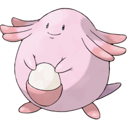

ESFJ – The Caregiver

You’re a Chansey!
Personality Overview: ESFJs are warm, supportive, and thrive on helping others. You love creating harmony, building strong relationships, and making sure the people around you feel cared for. Others trust you because you’re dependable, kind, and always ready to lend a helping hand.
Strengths
- Compassionate and empathetic toward others
- Excellent at creating a welcoming, inclusive environment
- Reliable and responsible in relationships and commitments
Challenges
- Can become too focused on pleasing others
- Might take criticism personally
- Sometimes struggles to prioritize self-care
Why Chansey?
Chansey is the ultimate caregiver, known for its healing abilities and nurturing nature. Just like you, Chansey thrives on kindness and making others feel safe and supported. Your presence is comforting, and people are drawn to your warmth and positivity.
Personality Deep Dive
Your dominant trait is Extraverted Feeling (Fe), which drives you to maintain harmony and build strong social bonds. Your secondary trait, Introverted Sensing (Si), makes you dependable and attentive to people’s needs. Together, you’re a natural caretaker who thrives when helping others succeed.
Pokémon Compatibility
You connect best with other caring and community-focused types, but overly independent or highly analytical types may feel distant to you.
✅ Best Matches
- ENFJ – Pikachu: Shares your enthusiasm for connecting with others and building community.
- ISFJ – Vaporeon: Equally nurturing and dependable, creating a stable and harmonious bond.
- ENFP – Eevee: Their fun-loving energy pairs beautifully with your supportive nature.
🔸 Good Potential
- INFJ – Gardevoir: Brings wisdom and depth to your warmth, creating a meaningful connection.
- ESTJ – Blastoise: Shares your sense of duty and structure, though may feel a bit too rigid for you at times.
- ESFP – Jigglypuff: Keeps life fun and lively while you provide grounding support.
⚠️ Tough Matches
- INTP – Alakazam: Too analytical and detached, which can feel emotionally distant for you.
- ISTP – Machamp: Prefers independence, which may clash with your need for connection.
- ENTP – Gengar: Fun but unpredictable—can sometimes push your patience with their teasing.
Retake the Quiz